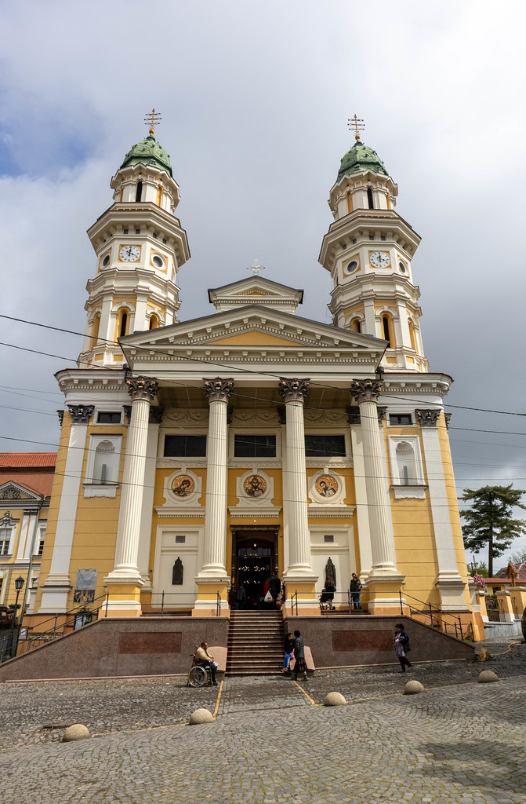

Major religions in Ukraine
Ukraine has a long religious history shaped by Eastern Orthodoxy and Catholicism. Religion plays a central role in cultural identity, rites of passage, and seasonal festivals.
-
Eastern Orthodoxy — The largest religious tradition, represented by several autocephalous and canonical churches. Orthodox Christianity influences liturgy, architecture (domed churches), and major holidays (e.g., Easter).

-
Greek Catholic / Ukrainian Greek Catholic Church — A Byzantine-rite Catholic church important especially in Western Ukraine, blending Eastern liturgy with communion with Rome.

Slavic & Ukrainian mythology
Ukrainian folklore preserves a vibrant set of myths, spirits, and folk beliefs. Many of these originate in pre-Christian Slavic religion and have persisted in songs, seasonal rituals and oral tales.
- Perun — Slavic god of thunder and war (parallels to other Indo-European thunder gods).

- Mokosh — Earth and fertility goddess associated with women's crafts and spinning.

- Domovyk — Household spirit who protects the home if respected; disobeyed it brings mischief.

- Rusalka — Water nymphs or spirits connected to rivers and lakes; appear in folktales and seasonal rituals.

- Kupala Night — A midsummer festival with bonfires, bathing rituals and folklore about love and divination.

Modern Ukrainian culture interweaves Christian practice with folk traditions — you’ll see this in seasonal celebrations, weddings, and rural customs.